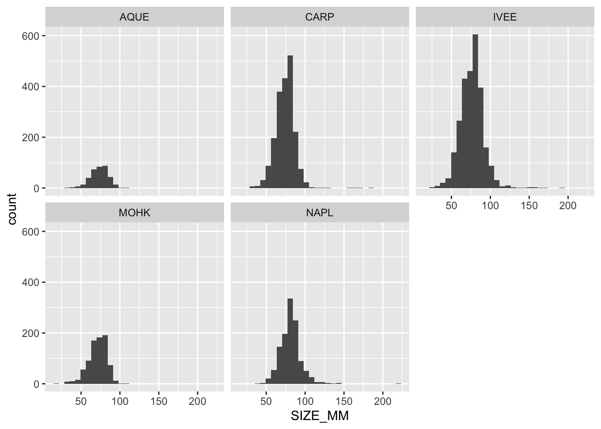
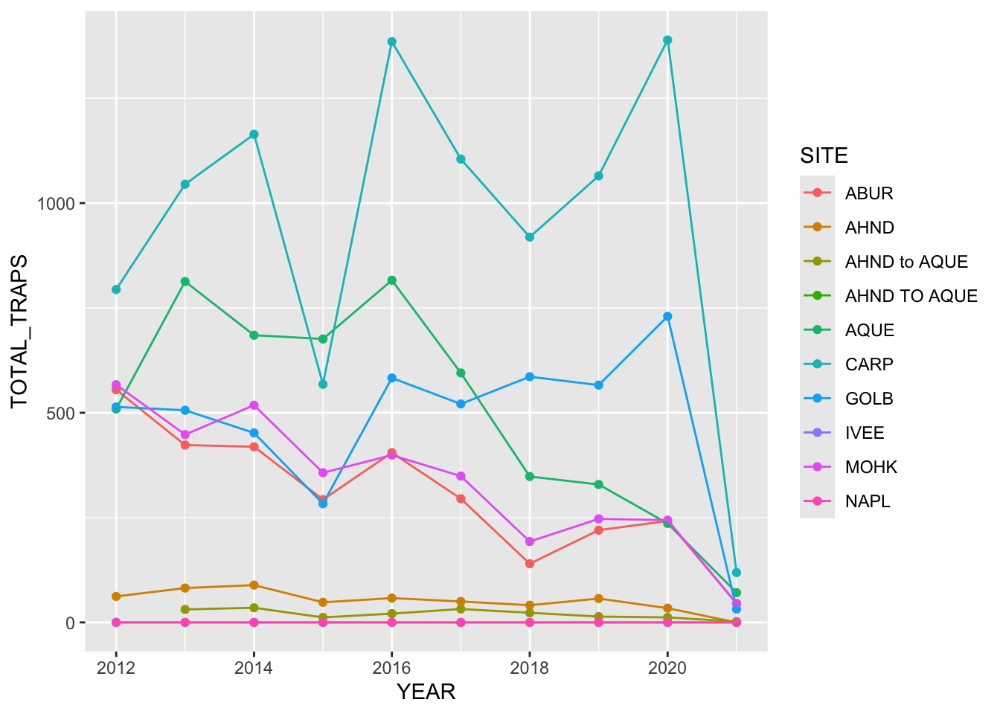

The following objects are masked from 'package:stats':
filter, lag
The following objects are masked from 'package:base':
intersect, setdiff, setequal, union
library(ggplot2)
Warning: package 'ggplot2' was built under R version 4.5.2
library(tidyr)library(here)
here() starts at /Users/ramitg/Documents/Victor&RamitA07
lobster_traps <-read_csv( here::here("Data Folder","Time-series of lobster trap buoy counts","Lobster_Trap_Counts_All_Years_20210519.csv" ))
Rows: 11071 Columns: 10
── Column specification ────────────────────────────────────────────────────────
Delimiter: ","
chr (6): FISHING_SEASON, SITE, SEGMENT_START, SEGMENT_END, OBSERVER, NOTES
dbl (3): YEAR, MONTH, TRAPS
date (1): DATE
ℹ Use `spec()` to retrieve the full column specification for this data.
ℹ Specify the column types or set `show_col_types = FALSE` to quiet this message.
Santa Barbara Coastal LTER, D. Reed, and R. Miller. 2022. SBC LTER: Reef: Abundance, size and fishing effort for California Spiny Lobster (Panulirus interruptus), ongoing since 2012 ver 8. Environmental Data Initiative. DOI: 10.6073/pasta/25aa371650a671bafad64dd25a39ee18
(Accessed 2026-04-14).
Summary of Abstract
This study tracks California spiny lobster populations along the Santa Barbara Channel to understand how fishing impacts kelp forest ecosystems. Researchers collect data on lobster abundance, size, and fishing pressure, especially comparing sites inside marine protected areas (MPAs) to those outside. The dataset includes annual diver surveys of lobster populations at five reef sites and regular measurements of fishing activity (via trap counts) during the fishing season across multiple locations.
Lobster Abundance & Size File
lobster_abundance <-read_csv(here::here("Data Folder","Time-series of lobster abundance and size","Lobster_Abundance_All_Years_20220829.csv"))
Rows: 7574 Columns: 10
── Column specification ────────────────────────────────────────────────────────
Delimiter: ","
chr (2): SITE, REPLICATE
dbl (7): YEAR, MONTH, TRANSECT, SIZE_MM, COUNT, NUM_AO, AREA
date (1): DATE
ℹ Use `spec()` to retrieve the full column specification for this data.
ℹ Specify the column types or set `show_col_types = FALSE` to quiet this message.
`stat_bin()` using `bins = 30`. Pick better value `binwidth`.
Warning: Removed 518 rows containing non-finite outside the scale range
(`stat_bin()`).

Lobster Trap Counts
lobster_traps <-read_csv(here::here("Data Folder","Time-series of lobster trap buoy counts","Lobster_Trap_Counts_All_Years_20210519.csv"))
Rows: 11071 Columns: 10
── Column specification ────────────────────────────────────────────────────────
Delimiter: ","
chr (6): FISHING_SEASON, SITE, SEGMENT_START, SEGMENT_END, OBSERVER, NOTES
dbl (3): YEAR, MONTH, TRAPS
date (1): DATE
ℹ Use `spec()` to retrieve the full column specification for this data.
ℹ Specify the column types or set `show_col_types = FALSE` to quiet this message.
`summarise()` has grouped output by 'SITE'. You can override using the
`.groups` argument.
## Run this chunk to test exercises ##library(readr)library(dplyr)library(ggplot2)library(tidyr)lobster_traps <-read_csv( here::here("Data Folder","Time-series of lobster trap buoy counts","Lobster_Trap_Counts_All_Years_20210519.csv" )) %>%mutate(TRAPS =na_if(TRAPS, -99999))
Rows: 11071 Columns: 10
── Column specification ────────────────────────────────────────────────────────
Delimiter: ","
chr (6): FISHING_SEASON, SITE, SEGMENT_START, SEGMENT_END, OBSERVER, NOTES
dbl (3): YEAR, MONTH, TRAPS
date (1): DATE
ℹ Use `spec()` to retrieve the full column specification for this data.
ℹ Specify the column types or set `show_col_types = FALSE` to quiet this message.
`summarise()` has grouped output by 'SITE'. You can override using the
`.groups` argument.
# line and point plotggplot(data = lobsters_traps_summarize, aes(x = YEAR, y = TOTAL_TRAPS)) +geom_point(aes(color = SITE)) +geom_line(aes(color = SITE))

Summary/Discussion
The size distribution plots show that lobster sizes are relatively consistent across sites, with most individuals falling between about 60–100 mm. IVEE and CARP appear to have slightly broader distributions and include some larger individuals, while AQUE and MOHK show narrower ranges with fewer large lobsters. Overall, the distributions are centered around similar size ranges, suggesting comparable population structure across sites with only minor differences in variability and maximum size.
The time series plot of total trap counts reveals strong spatial and temporal variation in fishing pressure. Sites like CARP and AQUE consistently experience the highest trap counts, indicating heavier fishing activity, while sites such as AHND and nearby segments show very low and stable effort. Several sites exhibit fluctuations over time, with noticeable peaks around 2016 and 2020, followed by a sharp drop in 2021 across nearly all locations. This decline likely reflects reduced sampling or fishing effort rather than a true ecological change. Together, these plots suggest that while lobster size structure remains relatively stable across sites, fishing pressure varies considerably by location and year.